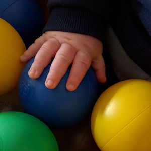
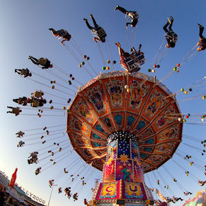
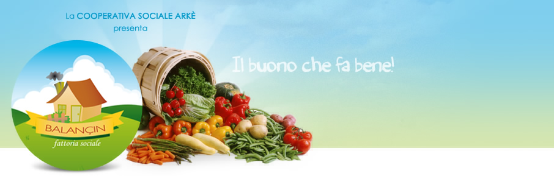
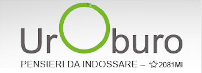
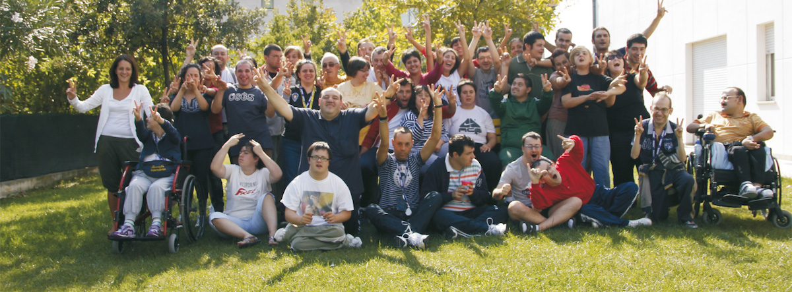

Ci sono diversi modi per celebrare un battesimo e un matrimonio. La nostra idea è quella di organizzare una festa con e per le persone a cui vogliamo bene e coinvolgere, nel realizzarla, realtà considerate spesso alternative


La scelta
Nella ricerca di queste realtà, abbiamo scelto progetti che sostengono il territorio locale e iniziative in cui crediamo: offrire occasioni di lavoro a persone diversamente abili, acquistare in maniera etica, supportare il lavoro artigianale. Maggiori dettagli di seguito e si, sappiamo che avremmo sicuramente potuto fare di più
Come partecipare
Non c’è un dress code imposto (lo sposo stesso non avrà la cravatta): venite come se stesse andando ad una festa tra amici, portando la vostra gioia, simpatia e voglia di condividerle con gli altri. E’ davvero tutto ciò che serve
Partecipare
Due i momenti salienti: la cerimonia del matrimonio e del battesimo nella basilica di San Lanfranco, poi la festa tutti assieme.
La cerimonia, ore 15
Parrocchia di San Lanfranco, via San Lanfranco Vescovo 4, Pavia
La festa, ore 17
B&B The alle Cinque, Via Cà della Terra 55, Pavia
Ci aiutano
Nel caso vogliate prendere spunto per iniziative future, di seguito la lista delle realtà solidali che ci hanno aiutato ad organizzare il Bat-monio. Sappiamo che ce ne sono molte altre, e speriamo crescano sempre di più, in numero e qualità della proposta offerta
Lista nozze? Contributo per il viaggio? La famosa busta? Niente di tutto questo, dato che possediamo già la fortuna più grande: essere felici con quello che abbiamo, persone a cui vogliamo bene comprese Vi invitiamo, invece, a mettervi in gioco accettando una provocazione: contribuire a sostenere delle realtà che conosciamo e che riteniamo stiano facendo del bene nel contesto in cui operano. Sta a voi decidere se accettarla e in che misura: non c’e’ nessun obbligo da parte nostra
Associazione Nazionale Famiglie di persone con disabilita' intellettiva e/o relazionale
BeB The alle Cinque
Padroni da casa
Donazione libera
Ogni luogo ha tanti esempi di buona volonta' da sostenere
Fattoria Sociale il Balancin
Catering e servizio

Il progetto “BALANÇIN Fattoria Sociale” mira a creare una struttura, o meglio una rete di strutture, in cui l’attività agricola diviene "sociale" conferendo un surplus di eticità ai suoi prodotti, dal momento che estende la sua funzione primaria (quella di produrre beni) a fini riabilitativi, formativi, di integrazione, di creazione di opportunità lavorative "protette".
Da ormai un decennio, infatti, l’agricoltura è stata chiamata a ricoprire un ruolo multifunzionale all’interno della nostra società; il suo compito non è più solo la produzione di alimenti ma, ad esempio, la sostenibilità ambientale, la conservazione del paesaggio rurale, il mantenimento e la trasmissione di alcuni valori tradizionali.
L’esperienza delle fattorie didattiche e l’enorme diffusione di aziende agrituristiche, hanno per prime tentato di coniugare la produzione con un ambito culturale e formativo. La Fattoria Sociale si inserisce in questo filone, proponendosi come possibile risposta alla domanda di spazi riabilitativi o ergoterapici per soggetti portatori di handicap fisico o mentale, senza trascurare altre categorie di disagio e la possibilità di effettuare anche interventi di prevenzione.
Trattandosi, tuttavia, di un’impresa economicamente e finanziariamente sostenibile, che propone i suoi prodotti sul mercato, l’altro obiettivo forte del progetto non può che essere la creazione di opportunità formative ed occupazionali rivolte a soggetti svantaggiati.
Atelier di oreficeria artistica per il reinserimento sociale

Uroburo è una cooperativa sociale, costituita a Milano il 13 aprile 2015, nata dall'idea di fare azioni concrete di integrazione sociale.
In particolare si è rivolta al mondo del disagio psichico collaborando con diversi CPS (Centri Psico Sociali) e formando e inserendo al lavoro numerosi sofferenti psichici.
Attualmente occupa 6 persone regolarmente assunte di cui 2 svantaggiati sociali, e ha in attivo 2 tirocini con persone disabili. Nell'arco degli anni sono stati 12 gli svantaggiati sociali inseriti al lavoro.
“Presi nella rete” è un'associazione di promozione sociale che nasce nel 2014 da un gruppo di persone che hanno scommesso sulla forza della collaborazione, diffondendo l'idea che insieme si possa fare, sostenere, promuovere progetti di più realtà sociali.
Credere nell'importanza delle relazioni è stato fondamentale per sposare il km "0" che ci stupisce di iniziative e creatività, attraverso il frutto del lavoro artigianale, consapevoli che l'acquisto etico è un mezzo per promuovere un'altra economia.
Associazione Nazionale Famiglie di persone con disabilita' intellettiva e/o relazionale

L’Anffas è un’associazione di famiglie coinvolte nel problema della diversa abilità che ha maturato nel corso di questi decenni una sempre più profonda coscienza del proprio ruolo educativo nei confronti dei propri ragazzi “speciali” riconosciuto in italia dalle stesse norme costituzionali.
Superando l’ottica della disabilità come problema subito, è arrivata ad affrontarlo attuando sinergie con le strutture sociali del territorio, in un’osmosi di solidarietà capace di trasformare il problema stesso in risorsa.
Ogni luogo ha tanti esempi di buona volonta' da sostenere
L’Anffas è un’associazione di famiglie coinvolte nel problema della diversa abilità che ha maturato nel corso di questi decenni una sempre più profonda coscienza del proprio ruolo educativo nei confronti dei propri ragazzi “speciali” riconosciuto in italia dalle stesse norme costituzionali.
Superando l’ottica della disabilità come problema subito, è arrivata ad affrontarlo attuando sinergie con le strutture sociali del territorio, in un’osmosi di solidarietà capace di trasformare il problema stesso in risorsa.